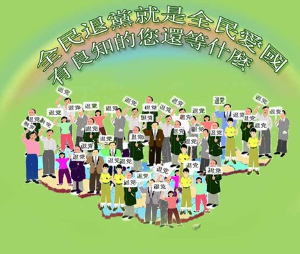

14/5/05 — Từ DAJIYUAN.COM
Chỉ nội trong ba tuần từ khi xảy ra diễu hành 423 kỷ niệm 1 tỷ người thoái đảng, một nửa triệu người nữa đã thoái xuất khỏi ĐCSTQ. Hiện nay, khoảng 1,5 đã công bố thoái xuất khỏi đảng, đoàn và đội. Trong tuần vừa qua, trung bình mỗi ngày có 25 đến 30 ngàn công bố thoái đảng.

“Các trung tâm dịch vụ thoái đảng toàn cầu” đã được thiết lập trên hơn 30 thành phố lớn ở các nước trên thế giới. Các trung tâm này có liên lạc trực tiếp với hơn 30 tỉnh và khu tự trị trại Trung Quốc.
Làn sóng thoái đảng tăng mạnh đã dẫn đến việc thành lập một tổ chức phi kinh tế toàn cầu: Các trung tâm dịch vụ thoái đảng toàn cầu. Tổ chức này xuất phát từ những nhóm hoạt động như thời báo Đại Kỷ Nguyên, cáo biệt Trung Cộng, Toàn cầu đưa Giang Trạch Dân ra công lý, và kinh doanh tại Trung Quốc. Mục đích là để cung cấp phương tiện thuận lợi cho những ai mong muốn cắt đứt mọi quan hệ với ĐCSTQ.
“Các trung tâm dịch thoái đảng toàn cầu” đặt trụ sở chính tại US. Sau khoảng hai tháng vừa hoạt động vừa thử nghiệm, một hệ thống đã được thành lập trên cả 4 châu lục, đặt tại các nơi có nhiều người Hoa sinh sống, kể cả: New York, Washington DC, San Francisco, Toronto, Vancouver, London, và Paris. Các trung tâm có liên quan trực tiếp đến các tỉnh thành tại Trung Quốc, mục đích để phục vụ cho người Hoa có thể công bố thoái xuất khỏi ĐCSTQ và quảng bá rộng khắp Cửu Bình —Chín bài bình luận về đảng cộng sản— cũng như thông tin về làn sóng thoái đảng.
Cửu Bình, một sê-ri chín bài bình luận do ban biên tập Thời báo Đại Kỷ Nguyên DAJIYUAN.COM công bố, đã vạch trần bản chất tội lỗi của ĐCSTQ cùng với dẫn chứng nhiều tội ác trong lịch sử của ĐCSTQ. Từ sự công bố của Cửu Bình, một làn sóng thoái đảng đã lan rộng khắp, và chế độ Trung Cộng cảm thấy áp lực nặng nề. Hiện nay, nhiều chuyên gia cho rằng Cửu Bình là một trong những nhân tố hàng đầu đang làm ĐCSTQ tan rã.
Nhận thức rõ về ảnh hưởng của Cửu Bình, ĐCSTQ đã có nhiều phản ứng trong thời gian qua. Trường Đại học Harward đã công bố một nghiên cứu gần đây về việc “ngăn và lọc thông tin trên Internet” của ĐCSTQ, trong đó Cửu Bình đang là mối quan tâm hàng đầu của ĐCSTQ.
“Các trung tâm dịch thoái đảng toàn cầu” kêu gọi các cộng đồng người dân trên thế giới hãy lưu ý tới chính sách bạo lực của ĐCSTQ và hãy cùng ủng hộ những người đang sống tại Trung Quốc và mong muốn thoái xuất khỏi ĐCSTQ. “Các trung tâm dịch thoái đảng toàn cầu” cũng hy vọng rằng các cộng đồng thế giới, các tổ chức quốc tế, các hãng thông tấn, sẽ cùng tham gia vạch trần những thủ đoạn đe doạ và đàn áp của ĐCSTQ nhắm vào những người dân mong muốn thoái đảng.
{kind=link}